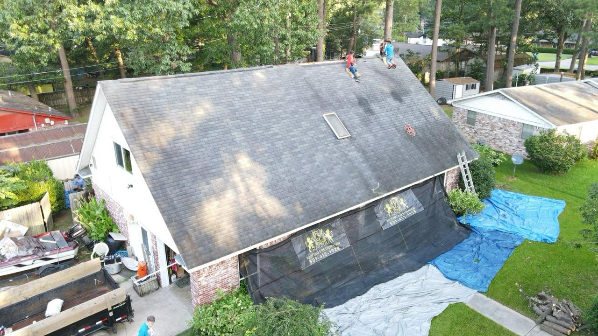

01
Roof repairs & full replacements
Every job starts with a free roof inspection. We check shingles, underlayment, fasteners, vent boots, chimneys and valleys to find the exact source of a problem, and we repair it whenever a repair makes sense.
When a roof has reached the end of its life, a replacement includes complete removal of the old materials, a decking inspection, new underlayment and shingles or metal installed to manufacturer specifications. We use trusted, durable products, including Atlas shingles.